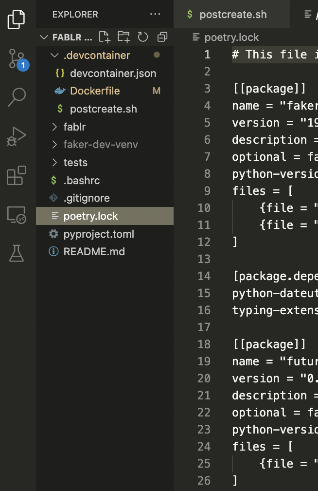

Jesus Caro's Blog
Jesus Caro's Blog
Development Containers in VSCode and Github Codespaces!
Sun 19 November 2023Development Containers¶
Intro¶
If you're involved in a collaborative project, you're likely familiar with dev containers. They serve as a crucial tool for ensuring consistency in development environments across team members. This means you're guaranteed to be working with the same Python version, have the necessary drivers, and more.
In my current role, we leverage dev containers in conjunction with Poetry not only to enforce a standardized development environment but also to establish a uniform Python virtual environment.
This article will demonstrate a straightforward method for creating a dev container for a Python project. In this guide, we will be creating a development container for a package called Fablr. In this example we will:
- Define a dev container using devcontainer.json.
- Specify a Docker image to complement our dev container.
- Set up a post dev-container creation script.
- Illustrate how to connect a VS Code instance to our dev container, including defining VS Code extensions within it.
- Show how integrating Poetry ensures all developers work with a consistent toolkit.
- Highlight how dev containers can enhance development in GitHub CodeSpaces.
Sections¶
Note: A prerequisite for this article is having Docker Desktop and VS Code Installed. You can find a link to docker desktop here. You can find another for VS Code here.
What are Dev Containers?¶
What is Docker?¶
To understand dev containers, first we should become a little familiar with Docker. Docker has been around since 2013 and allows you to create containerized applications, including containerized virtual machines. You can read more about virtual machines here. Using Docker containers, you can effectively create a uniform virtual machine using an image. This virtual machine can be loaded with any OS of your choosing, with any applications, drivers, and dependencies installed.
Dev Container Project Structure¶
It’s worth noting that the following files have to be created in a .devcontainer folder in the root directory of your project like so:
/Fablr
/.devcontainer
devcontainer.json
Dockerfile
postcreate.sh
/Fablr
__init__.py
/tests
test_fablr.py
readme.md
poetry.lock
pyproject.tomlDefining a devcontainer.json file¶
The devcontainer.json file ties together everything you need and is, in short, a configuration file for your dev container. In the following sections, we’ll be defining a Dockerfile, as well as a postcreation.sh file. This file ties everything together to ensure that these files and their encapsulated instruction sets are run successfully.
Here is an example of a devcontainer.json file defined for our toy package Fablr:
{
"name": "Fablr Dev",
"dockerFile": "Dockerfile",
"postCreateCommand": "bash .devcontainer/postcreate.sh",
"settings": {
"python.terminal.activateEnvInCurrentTerminal": true,
"python.defaultInterpreterPath": "~/workspaces/Fablr/faker-dev-venv/bin/python"
},
"extensions": [
"ms-python.python",
"mikoz.black-py",
"charliermarsh.ruff",
"njpwerner.autodocstring"
]
}The key-value pairs defined above are:
- name: The name of our dev container.
- dockerfile: The
Dockerfiledefining our container that will be created in Docker. - postCreateCommand: The bash script that needs to be run after creating the Docker container.
- settings: Any miscellaneous settings that need to be defined. Here we will be creating a virtual environment with Poetry, and our setting key-value pairs
python.terminal.activateEnvInCurrentTerminalandpython.defaultInterpreterPathindicate whether the virtual environments should be activated, as well as where the interpreter path of our virtual environment is. - extensions: This installs any VSCode extensions you want to be available on creation of the development environment.
Defining a Dockerfile for our Development Container¶
In Docker, this is done using a DockerFile, you can read more about docker files here. A docker file is effectively a set of instructions telling docker how to set up and configure a docker container. Here’s a simplified example of one we’ll be using:
# Use an official Python image with the desired version
FROM python:3.8
# Set the working directory inside the container
WORKDIR /workspaces/FablrEvery DockerFile starts with the line From ____. In the above example FROM python:3.8 tells docker that the base image to build the container on is the one hosted on DockerHub here. It tells docker to pull that image and set it as a base image. The following line WORKDIR /workspaces/Fablr sets the working directory to /workspaces/Fablr .
It’s worth noting you can add commands to run, such as the installation of drivers, copying files etc. These commands would be identical to the terminal commands. All you have to do is prepend the commands with RUN like so:
# Use an official Python image with the desired version
FROM python:3.8
# Set the working directory inside the container
WORKDIR /workspaces/Fablr
# Install Postgres Driver
# Update package lists
RUN apt-get update
# Install curl and other necessary packages
RUN apt-get install -y curl apt-transport-https ca-certificates gnupg2
# Install PostgreSQL client
RUN apt-get install -y libpq-dev
This is one method for making sure you have a postgres driver automatically installed in your dev container. After installing libpq-dev , you can pip install psycopg2 , or add it to your poetry.lock file (more on this later) to make sure it’s available in your virtual environment.
However I would implement this in the postcreation.sh bash script in the following section.
Set up a post container-creation script:¶
As we saw before devcontainer.json allows you to define a post container-creation script that runs automatically after creating the container. You can do a lot with this bash script, such as install drivers, copy and download files, etc.
In our example [postcreate.sh](http://postcreate.sh) script, we will pip install poetry, and using the sample poetry configuration files, we will create a virtual environment, and then activate that environment in our VSCode workspace. The postcreate.sh script is below:
#!/bin/bash
echo "##################"
echo "running postcreate.sh"
echo "##################"
# Set up a virtual environment from the poetry.lock file
pip install poetry==1.7.0
python -m venv faker-dev-venv
source faker-dev-venv/bin/activate
poetry install
First, we print out “running postcreate.sh”, this is useful for real-time debugging as VSCode allows you to monitor the dev-container creation in VSCode’s terminal. The following lines install poetry, this is pinned at poetry==1.7.0, after that we create a virtual environment using base python’s venv . We activate that environment, and then install all dependencies in our poetry configuration files.
This virtual environment will be located in the directory /workspaces/Fablr/faker-dev-venv/bin/python . This is where the settings configuration in devcontainer.json comes in handy:
"settings": {
"python.terminal.activateEnvInCurrentTerminal": true,
"python.defaultInterpreterPath": "~/workspaces/Fablr/faker-dev-venv/bin/python"
}
This automatically sets the virtual environment path as the default interpreter and activates it.
The Final Product:¶
After making sure you have your three configuration files the devcontainer directory in the root of your repo, you should be able to open up your repo in VSCODE:

Now you can hit CMD+Shift+P, to open up your pallet and run Dev Containers: Rebuild Container without cache.

If configured correctly you should see it start to build automatically!

It’s definitely worth mentioning that I have configured this dev container to leverage **poetry** to manage my virtual environment, so if you copy and paste my files they won’t necessarily work, unless you have created a repo already using poetry. You can learn more about that here
My poetry project has a few dependencies such as Faker, usa-address, and pendulum . Let’s see if our virtual environment was created successfully. After the container is created, we can open up a quick python terminal and try and import Faker and create a fake address:
(faker-dev-venv) root@0cc23735c8a7:/workspaces/Fablr# python
Python 3.8.18 (default, Nov 1 2023, 11:08:38)
[GCC 12.2.0] on linux
Type "help", "copyright", "credits" or "license" for more information.
>>> import faker
>>> generator = faker.Faker()
>>> generator.address()
'05065 Mcmillan Court Suite 013\nPort Jesse, UT 61666'
It seems like our environment was set up succesfully, but if we want to be 100% sure we can always check pip freeze:
Faker==19.13.0
future==0.18.3
pendulum==2.1.2
probableparsing==0.0.1
python-crfsuite==0.9.9
python-dateutil==2.8.2
pytzdata==2020.1
six==1.16.0
typing_extensions==4.8.0
usaddress==0.5.10
Github Codespaces:¶
One neat thing about defining a dev container in your repository, is that it integrates pretty seamlessly with Github Codespaces. In order to create a development environment using your container you can navigate to your repository. Click on the upper right green Code icon. You will see a dialog box allowing you to create a codespace on whatever branch you’re on. protip if you’re developing on a feature branch, make sure you create the codespace on the feature branch.

On the lower righthand side you can view the progress of the codespace configuration:

Once it’s done loading you’ll see the virtual environment activated and you’re off to the races!
Conclusion¶
Dev containers are fantastic for working in collaborative projects, they offer consistency and standardization across development environments, ensuring a unified toolkit among team members. By seamlessly integrating dev containers with Poetry, you are not only able to leverage a standardized development environment but also establish a consistent Python virtual environment.
Throughout this comprehensive guide, we outlined the process of creating a dev container for the Python project Fablr. From defining the devcontainer.json to specifying Docker images, setting up post-dev-container scripts, and integrating with VS Code extensions, each step ensures a streamlined and reproducible setup.
Furthermore, the guide emphasizes the flexibility of post-container-creation scripts, showing how a postcreate.sh can help automate the configuration of a virtual environment using Poetry and activate it within the VS Code workspace.
The final product showcases a seamless integration of dev containers within VS Code, facilitating a straightforward setup process, and underscores the importance of leveraging Poetry for managing virtual environments.
You can find a link to the repository here: https://github.com/jesusmcaro/Fablr. Please note that further articles will build upon this repository. So you may see a difference in some of the aforementioned files and what is currently used in the repo.